Children’s literature, literacy and childhood
Authors
Explore a selective directory of picturebook authors and examples of their work. Authors are listed alphabetically by surname; the featured books are not complete bibliographies.
163 book entries
About the Children’s Laureate at BookTrust · Former Laureates
Beatrice Alemagna
Beatrice Alemagna uses textured marks, shifts in scale and unexpected perspectives to bring children’s curiosity and frustrations into view.
Publisher profile · Publisher profile
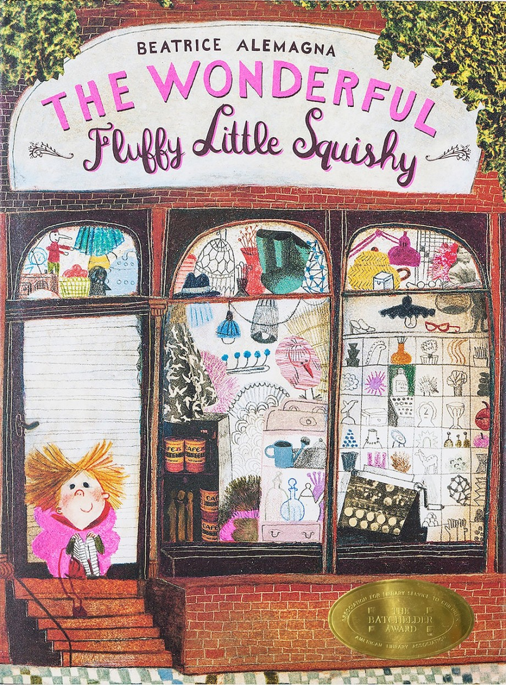
The Wonderful Fluffy Little Squishy
A child searches her neighbourhood for a special present for her mother. Alemagna’s crowded, textured pictures make each encounter part of the pleasure and give the invented gift a gradually emerging meaning.

On a Magical Do-Nothing Day
A child reluctantly leaves a screen behind and explores a wet outdoor world. Colour and texture turn close attention into adventure; discuss the discovery without making all screen use the opposite of worthwhile experience.

Harold Snipperpot’s Best Disaster Ever
Harold’s unhappy birthday changes when an unusual visitor brings more guests than anyone expected. The escalating visual chaos gives the story its humour while revealing shifts in the family’s relationships.

Never, Not Ever!
A child’s determination to resist a change leads to an increasingly comic negotiation. Alemagna uses exaggeration and expression to make resistance understandable as well as funny.
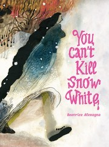
You Can’t Kill Snow White
Alemagna revisits Snow White through unsettling images and a close attention to violence and transformation. Preview this darker retelling and compare its visual choices with versions readers already know.

A Lion in Paris
An unfamiliar city gradually becomes a place where a lonely lion can be seen and accepted. Parisian landmarks sit alongside intimate moments of looking, making the outsider’s experience central to the journey.
Jenn Bailey
Jenn Bailey writes stories about an autistic child named Henry. A Friend for Henry and Henry, Like Always bring readers close to his experiences of friendship and changing classroom routines.

A Friend for Henry
Jenn Bailey · Mika Song
· San Francisco, California: Chronicle Books
United States
A classroom friendship told from the perspective of an autistic child.
Schneider Family Book Award 2020 — Young Children honour · Award record
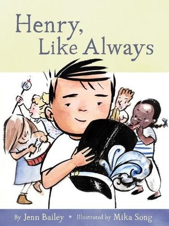
Henry, Like Always
Jenn Bailey · Mika Song
ISBN 9781797213897
United States
A change to the classroom routine unsettles Henry as his class prepares a parade. The short chapters and pictures follow the ways teachers and classmates support participation while respecting his need for predictability; this is an illustrated early reader rather than a conventional picturebook.
Illustrated early reader
Schneider Family Book Award 2024 — Young Children winner · Award / selection record
Jeannie Baker
Jeannie Baker builds intricate collages from natural and found materials. In Window and Belonging, successive views of the same place let readers notice how a neighbourhood changes over time.

Where the Forest Meets the Sea
A child visits an Australian rainforest and imagines its deep past and possible future. Baker’s layered collage rewards close looking at the relationship between living forest, human history and development.

Window
A fixed view through a window changes as a child grows up. With little written guidance, readers can trace how expanding development transforms the landscape and decide what the repeated viewpoint reveals or leaves out.

Belonging
The view from a window gradually changes as residents reclaim and plant their urban surroundings. Small recurring details make collective work visible across time; compare this development with the changing landscape in Window.

Mirror
Two families, one in Australia and one in Morocco, go about their daily lives in parallel visual narratives. The book’s paired structure asks readers to look for connections without treating either household as a template for a whole country.
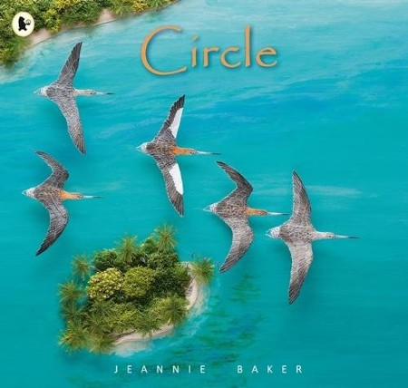
Circle
The migration of godwits links distant environments and the people who encounter them. Changes in scale connect individual birds with extensive journeys and habitats that depend on one another.

The Hidden Forest
A child’s underwater encounter reveals a kelp forest that had seemed unfamiliar from the surface. Textured collage invites close attention to the relationships among sea life, place and human activity.

Desert Jungle
A young visitor gradually becomes attentive to a desert landscape and the life within it. Baker’s collage makes small organisms and changing light worth looking for, challenging the assumption that a desert is empty.
Mac Barnett
Mac Barnett writes picturebooks that invite readers to notice how a story is being made. In Chloe and the Lion, an argument between the author and illustrator becomes part of the plot.
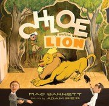
Chloe and the Lion
Mac Barnett · Adam Rex
The author and illustrator appear as characters and disagree about how to tell the story.
United States

Extra Yarn
Mac Barnett · Illustrated by Jon Klassen
Annabelle knits colour into a wintry town from a box of yarn that never seems to run out.
Edition details
Anthony Browne
Waterstones Children’s Laureate, 2009–11.
Anthony Browne uses visual references, recurring motifs and details that invite a second look. In Voices in the Park, four accounts of the same outing reveal what each character notices and misses.

Voices in the Park
Four narrators describe an overlapping visit to a park. Shifts in type, colour and landscape make differences in mood and social position visible; compare what each voice notices and overlooks.

The Tunnel
A brother and sister enter an unsettling imaginative landscape through a tunnel. Visual references to fairy tales complicate the journey and the changing relationship between the siblings.

Willy’s Pictures
Willy appears inside playful reinterpretations of well-known artworks. Compare the visual substitutions and framing with reproductions of the referenced paintings, leaving room for children’s own transformations.

Willy and the Cloud
A cloud follows Willy and changes the way he experiences his day. The visual metaphor leaves room to discuss persistent worry without requiring readers to identify a single cause.

Gorilla
Hannah longs for time with her father and imagines an extraordinary companion. Browne’s visual echoes and quiet domestic details reward looking beyond the fantasy to the relationship that frames it.

Willy the Wimp
Willy tries to change himself after being mocked for his gentleness. The exaggeration of his transformation makes room to question whether strength requires copying the behaviour of bullies.

Piggybook
A household takes a mother’s labour for granted until her absence makes that dependence impossible to ignore. Transformations in the pictures sharpen the satire; ask how the family’s work is shared by the end.

Zoo
A family’s zoo visit raises uncomfortable questions about boredom, spectatorship and captivity. Compare the humans’ behaviour with the animals’ enclosures and the visual barriers repeated across the book.

Into the Forest
A child takes a route through the forest to visit his grandmother and encounters familiar fairy-tale figures. Notice the shift between colour and monochrome and the clues that connect the journey with anxiety at home.

Silly Billy
Billy’s worries multiply until his grandmother introduces worry dolls. The story offers a tangible conversation starter about worries; it need not imply that a single object will resolve every child’s distress.

Little Beauty
A gorilla’s request for companionship leads to a friendship with a kitten. Changes in scale and colour make tenderness and anger visible, while the pair’s communication invites questions about whose voice is heard.

The Shape Game
A family visit to an art gallery leads into playful transformations of shapes. Look for the links between artworks, family conversation and the drawings readers might make afterwards.

Through the Magic Mirror
Toby steps through a mirror into an altered version of his surroundings. Visual incongruities and reversals reward careful looking and let readers reconstruct the rules of the imagined world.
John Burningham
John Burningham lets the pictures carry a second story alongside the spoken text. In his Shirley books, a child’s imagined adventures unfold while adults talk about ordinary routines.

Borka: The Adventures of a Goose with No Feathers
First published 1963
A featherless goose struggles with expectations she cannot meet and finds help beyond her flock. Burningham’s textured pictures make the working harbour a setting for practical welcome rather than a demand to become the same as everyone else.

Mr Gumpy’s Outing
First published 1970
Mr Gumpy takes an increasingly crowded group for a boat ride. The repeating requests and fragile rules create anticipation before the inevitable upset, followed by a hospitable return to shore.

Mr Gumpy’s Motor Car
First published 1973
A drive becomes difficult when rain turns the road to mud. The passengers’ excuses and eventual cooperation turn a small mishap into a story about sharing the work as well as the ride.

Come Away from the Water, Shirley
First published 1977
Adults rest on a beach while Shirley’s imaginative adventure unfolds alongside their warnings. The contrast between the two visual narratives rewards reading the pictures independently of the adult commentary.

Time to Get Out of the Bath, Shirley
First published 1978
An ordinary bath opens onto a large imaginative adventure that the adult voice does not acknowledge. Compare the scale and activity of Shirley’s world with the repeated requests directed at her.

Granpa
First published 1984
A granddaughter and her grandfather share games, memories and fragments of conversation. Gaps between words and pictures invite readers to infer what connects the scenes, including the absence at the end.

John Patrick Norman McHennessy: The Boy Who Was Always Late
First published 1987
A boy’s extraordinary explanations for lateness are met with rigid disbelief. Repetition and the reversal at the end make this a pointed story about authority and whose account is taken seriously.

Oi! Get Off Our Train
First published 1989
A child’s train journey gathers animals whose homes are threatened. The repeated challenge changes into a pattern of welcome; discuss the different reasons each passenger needs somewhere to go.
Rod Campbell
Rod Campbell writes and illustrates books for very young children. Dear Zoo pairs a repeated sentence pattern with flaps that make each new animal a small surprise.

Dear Zoo
Rod Campbell
First published 1982 · Listed edition: ISBN 9780230747722 · Macmillan Children's Books
United Kingdom
A child asks the zoo for a pet, but each delivery brings an unexpected problem. Lift-the-flap reveals and a recurring pattern leave room for children to predict, sign or name the next animal.

Oh Dear!
Rod Campbell
A search for eggs takes Buster past a succession of farm animals.
Edition details
Eric Carle
Eric Carle’s painted-paper collages use colour and texture to give simple stories a strong visual rhythm. In The Very Hungry Caterpillar, die-cut holes and pages of different lengths turn reading into a physical activity.

The Very Hungry Caterpillar
First published 1969 · Listed edition: ISBN 9780140569322 · Puffin Books
Original publication: United States
A caterpillar eats, grows and eventually becomes a butterfly. Collage, holes in the pages and changes in page size make this a book to explore with hands as well as eyes; compare its imaginative food sequence with a real caterpillar’s diet.

The Very Busy Spider
ISBN 9780399256011
Original publication: United States
Farm animals interrupt a spider as she spins her web, but she keeps working. Repetition and the developing web reward close looking; tactile features depend on the edition, so check the physical book before planning a touch-based activity.
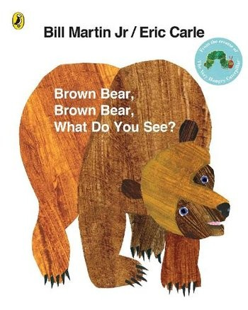
Brown Bear, Brown Bear, What Do You See?
Bill Martin Jr · Eric Carle
ISBN 9780141501598
Original publication: United States
A recurring question links a sequence of animals and colours. Carle’s collage gives the predictable text a strong visual partner; invite children to answer through pointing, signing, selecting a picture or speaking.
James Catchpole
James Catchpole writes picturebooks about disability from a child’s perspective. In What Happened to You? and You’re SO Amazing!, Joe questions the attention other people pay to his disabled body.
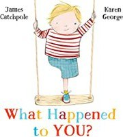
What Happened to You?
James Catchpole · Karen George
· London: Faber & Faber
United Kingdom
A child with one leg wants to play while other children ask about his body.
Schneider Family Book Award 2024 — Young Children honour · Award record
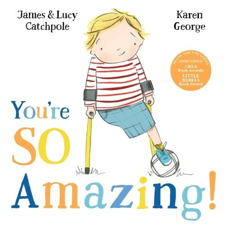
You’re SO Amazing!
James Catchpole and Lucy Catchpole · Karen George
2023 · Faber
United Kingdom
Joe questions why everyday play attracts praise simply because he is disabled. Read alongside What Happened to You?
Schneider Family Book Award 2025 — Young Children honour · Award record
Chih-Yuan Chen (陳致元)
Taiwan
Chih-Yuan Chen is a Taiwanese author and illustrator whose picturebooks explore belonging through expressive animal characters. He has received the Hsin Yi Picture Book Award three times.

Guji-Guji
Chih-Yuan Chen (陳致元) (author-illustrator)
2011 · Gecko Press · Paperback edition
A crocodile raised by ducks must decide how to protect his family when other crocodiles demand his loyalty.
On My Way to Buy Eggs
2003 · Kane/Miller English edition
A child’s ordinary errand becomes an imaginative journey through the neighbourhood.
The Featherless Chicken
2006 · Heryin Books English edition
A featherless chicken’s encounters invite discussion about appearance and acceptance.
Christopher Cheng
Christopher Cheng is an Australian children’s author whose picturebooks explore family, memory and care. One Tree and Bear and Rat approach these themes through very different visual worlds.

One Tree
Christopher Cheng; illustrated by Bruce Whatley
2019 · Puffin · ISBN 9780143786733
A discovery at the city market brings a grandfather’s memories of a farm and its tree back to life.
Edition and cover details
Bear and Rat
Christopher Cheng; illustrated by Stephen Michael King
2021 · Puffin
A story of friendship and care through illness and difficult changes.
Edition and cover details
Lauren Child
Waterstones Children’s Laureate, 2017–19.
Lauren Child uses collage, expressive lettering and playful dialogue to capture the rhythm of family conversations. Her Charlie and Lola books let Lola’s inventive arguments shape both the words and the pictures.

I Will Not Ever Never Eat a Tomato
Charlie gives familiar foods surprising imaginary identities as he tries to interest Lola in dinner. Read the invented worlds as playful persuasion, while leaving space for readers whose food preferences or sensory needs differ.

I Am Too Absolutely Small for School
Orchard Books
Lola has plenty of reasons why she should stay home. The mixed lettering and collage give her arguments their own visual rhythm.
Joseph Coelho
Waterstones Children’s Laureate, 2022–24.
Joseph Coelho writes poetry and picturebooks that make room for the small details of children’s everyday lives. His Luna books explore how shared visits to libraries and galleries can open up conversations.

Luna Loves Library Day
Joseph Coelho · Fiona Lumbers
2018 · Andersen Press paperback · ISBN 9781783445950
Luna’s library visit with her dad combines choosing books with time together. The story within the story gives another way to explore family relationships and experiences that may be difficult to put directly into words.

Luna Loves Art
Joseph Coelho · Fiona Lumbers
Andersen Press
A class visit to an art gallery gives Luna another way to get to know a classmate.
Cori Doerrfeld
Cori Doerrfeld writes and illustrates stories about children’s emotional lives. The Rabbit Listened explores how it feels when someone gives a child time and space to respond after a disappointment.

The Rabbit Listened
Cori Doerrfeld
· New York: Dial Books
United States
When something Taylor has made falls apart, a quiet companion offers a way to think about listening after loss or disappointment.
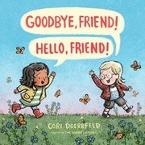
Goodbye, Friend! Hello, Friend!
Cori Doerrfeld
Two friends help readers notice the new beginnings that can follow goodbyes.
Edition details
Julia Donaldson
Children’s Laureate, 2011–13.
Julia Donaldson writes rhyming picturebooks with refrains that invite children to join in. Her collaborations with Axel Scheffler and Lydia Monks show how different illustrators give those rhythms a visual form.
Official website · Publisher profile
Explore rhyming picturebooks and read-alouds

The Gruffalo
Julia Donaldson · illustrated by Axel Scheffler
2016 · Macmillan Children’s Books · ISBN 9781509804757
A quick-thinking mouse uses an invented creature to outwit predators. Invite listeners to join in the repeating encounters.

Room on the Broom
Julia Donaldson · illustrated by Axel Scheffler
2017 · Macmillan Children’s Books · ISBN 9781509830435
The witch’s broom grows crowded as she makes room for more passengers. Repeating exchanges build anticipation and give listeners a part.

The Snail and the Whale
Julia Donaldson · illustrated by Axel Scheffler
2023 · Macmillan Children’s Books · ISBN 9781509845293
A small snail travels with a whale and finds a way to help when the whale is stranded. Listen to how the verse shifts in pace across the journey.

The Smartest Giant in Town
Julia Donaldson · illustrated by Axel Scheffler
2016 · Macmillan Children’s Books · ISBN 9781509812530
A giant gives away pieces of his new outfit. The accumulating rhymes make each act of generosity part of a pattern.

What the Ladybird Heard
Julia Donaldson · illustrated by Lydia Monks
2025 · Macmillan Children’s Books · ISBN 9781035049141
A quiet ladybird leads a noisy farmyard plan. Try reading the animal sounds aloud and tracing the route in the illustrations.

Stick Man
Julia Donaldson · illustrated by Axel Scheffler
2016 · Alison Green Books · ISBN 9781407170718
Mistaken for all sorts of objects, Stick Man keeps insisting on who he is. His recurring protest becomes a refrain.

The Smeds and the Smoos
Julia Donaldson · illustrated by Axel Scheffler
2019 · Alison Green Books · ISBN 9781407188898
Two young aliens fall in love despite their families’ feud. The rhyme makes the invented names and words easy to join in with.
Taro Gomi
Japan
Taro Gomi uses clear shapes, bright colour and economical language to explore familiar experiences from a child’s perspective. His books make observation and everyday learning playful.

My Friends
Taro Gomi (author-illustrator)
2005 · Chronicle Books · Board book edition
A child describes what she has learnt from animal friends, linking everyday actions with companionship.
I Really Want to See You, Grandma
2018 · English edition
A granddaughter and grandmother set out to visit each other, creating a playful story about family connection.
Chris Haughton
Chris Haughton creates picturebooks with bold colour, simplified shapes and carefully timed page turns. Goodnight Everyone uses a repeated pattern to ease readers towards sleep.

Goodnight Everyone
Chris Haughton
ISBN 9781406373226
United Kingdom
Sleep spreads through a forest while a young bear insists on staying awake. Repeated yawns and expanding views slow the pace, with the visual movement between small creatures and the wider night offering a calm ending.

A Bit Lost
Chris Haughton
A young owl looks for his mother with the help of a well-meaning squirrel.
Edition details
Kevin Henkes
Kevin Henkes’s picturebooks use humour and close observation to follow children through school, friendships and family life. In Chrysanthemum, a child’s feelings about her name change as the people around her respond to it.

Chrysanthemum
Kevin Henkes
A child who loves her name begins to doubt it after classmates tease her. Repetition reveals how comments accumulate; consider both the teacher’s intervention and what classmates could do to make their community kinder.
United States

Owen
Kevin Henkes
A cherished yellow blanket helps Owen face the changes that come with starting school.
Edition details
Eric Hill
Eric Hill created Spot, a puppy whose everyday adventures are built around questions and discoveries. In Where’s Spot?, the flaps let children take the lead in the search.

Where’s Spot?
Eric Hill
First published 1980 · Listed edition: ISBN 9780723263661 · Penguin Books, Limited
United Kingdom
Sally searches around the house for her missing puppy. Flaps turn each hiding place into a shared guessing game; children can answer by looking, pointing or speaking rather than following a fixed reading script.

Spot Goes to School
Eric Hill
Follow Spot’s first school day and use the flaps to predict what he will do next.
Edition details
Joanna Ho
Joanna Ho writes picturebooks that explore family relationships and cultural identity. In Eyes That Kiss in the Corners, a child sees her own features reflected in women across generations of her family.

Eyes That Kiss in the Corners
Joanna Ho · Dung Ho
· New York: Harper
United States
A girl sees a family resemblance across generations and learns to value it.

Eyes That Speak to the Stars
Joanna Ho · Illustrated by Dung Ho
A boy draws strength from family stories when a classmate’s drawing makes him question how others see him.
Edition details
Shirley Hughes
Shirley Hughes wrote and illustrated the everyday lives of young children. In Dogger, gestures and small domestic details make the loss of a favourite toy feel as momentous as it does to a child.

Dogger
Shirley Hughes
First published 1977 · Listed edition: ISBN 9781862308053 · Red Fox
United Kingdom
Dave’s treasured toy dog disappears and turns up on a school-fair stall. Hughes makes a small domestic loss feel momentous; look at the wordless exchanges that reveal his sister Bella’s kindness.

Alfie Gets in First
Shirley Hughes
Alfie races indoors and finds himself locked in with the adults outside.
Edition details
Oliver Jeffers
Oliver Jeffers writes and illustrates picturebooks that pair spare language with unexpected visual ideas. Lost and Found explores friendship through a journey, while The Heart and the Bottle gives grief a physical form.

Lost and Found
Oliver Jeffers
A boy assumes a penguin needs help returning home and sets out across the sea. The journey turns on a misunderstanding about loneliness; follow the characters’ expressions to ask what kind of help is actually wanted.
United Kingdom

The Heart and the Bottle
Oliver Jeffers
· London: HarperCollins Children’s Books
United Kingdom
A visual metaphor for withdrawing after loss and gradually opening up again.

The Day the Crayons Quit
Drew Daywalt · Oliver Jeffers
First published 2013 · Listed edition: ISBN 9780007513765
United States
Duncan’s crayons write letters protesting about the work they are given. Each voice reveals a different grievance, inviting readers to compare tone, fairness and the new possibilities that appear when a familiar tool is given a viewpoint.
Judith Kerr
Judith Kerr wrote and illustrated picturebooks in which ordinary domestic detail meets comic surprise. In the Tiger and Mog stories, expressions and background details often carry a joke alongside the words.

The Tiger Who Came to Tea
First published 1968 · Listed edition: ISBN 9780007215997 · HarperCollinsChildren'sBooks; HarperCollins
Original publication: United Kingdom
An unexpected guest eats his way through Sophie’s afternoon tea and leaves the household improvising supper. The ordinary kitchen setting makes the tiger’s impossible appetite especially funny; invite readers to notice what changes across the visit.

Mog the Forgetful Cat
ISBN 9780007171347
Original publication: United Kingdom
Mog’s ordinary mistakes frustrate her family until an unexpected night-time event changes how they see her. Kerr’s domestic details make the cat’s misunderstandings funny and recognisable, with affection surviving the household irritation.

Goodbye Mog
· London: Collins
Original publication: United Kingdom
A family says goodbye to an old cat as a new kitten arrives.
Patrice Lawrence
Waterstones Children’s Laureate, 2026–28.
Patrice Lawrence writes for readers from early childhood through the teenage years. In Granny Came Here on the Empire Windrush, a conversation with a grandmother connects family storytelling to migration history.
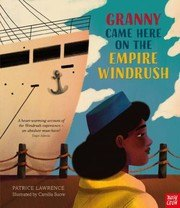
Granny Came Here on the Empire Windrush
Patrice Lawrence · Camilla Sucre
2022 · Nosy Crow · ISBN 9781839942310
Objects from Granny’s suitcase open up a family history of migration from Trinidad to England. The story touches on racism and belonging.
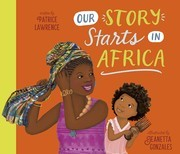
Our Story Starts in Africa
Patrice Lawrence · Jeanetta Gonzales
2022 · Magic Cat Publishing
A family visit to Trinidad opens up a conversation about African and Caribbean histories.
JiHyeon Lee
South Korea
JiHyeon Lee creates wordless picturebooks in which changes of colour and scale open up unexpected worlds. Her books invite close attention to encounters between unfamiliar characters.

Door
JiHyeon Lee (author-illustrator)
2018 · Chronicle Books
A child opens a mysterious door and enters a world where curiosity creates possibilities for friendship.

Pool
JiHyeon Lee (author-illustrator)
2015 · Chronicle Books · ISBN 9781452142944
A wordless picturebook in which two children discover friendship in an imaginative underwater world.
Suzy Lee
Suzy Lee creates wordless picturebooks in which the book itself shapes the action. In Wave and Shadow, the fold and edges of the page become boundaries characters can cross.

Wave
A girl’s encounter with the sea unfolds through gesture, colour and the space between the facing pages.
- Cover pending verification
Mirror
A child encounters a reflected figure whose actions begin to diverge from her own. The centre fold becomes part of the visual play, inviting readers to ask when reflection turns into an independent character.

Shadow
Household objects cast shadows that become a growing imaginative world. Compare objects with their silhouettes and look for the moments when the boundary between the two sides begins to fail.

Lines
Marks on ice lead into an exploration of movement, mistakes and drawing itself. The almost empty page makes each change of direction visible and leaves room to ask where a picture begins.
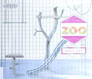
The Zoo
A visit to the zoo takes an unexpected turn as the pictures begin to diverge from the written account. Look back through the scenes to reconsider who is observing whom.

Open This Little Book
Jesse Klausmeier (author) · Suzy Lee (illustrator)
Compare the nested books with Lee’s use of page boundaries in her wordless work.
Jimmy Liao (幾米)
Jimmy Liao (幾米) is a Taiwanese author and illustrator whose picturebooks use cityscapes and imagined journeys to explore solitude and connection. In Turn Left, Turn Right, parallel scenes follow two neighbours who keep missing each other.
地下鐵 (The Sound of Colors)
Traditional Chinese · ISBN 9570316519
A journey through a city railway turns into a series of imagined scenes.

向左走．向右走 (Turn Left, Turn Right)
Traditional Chinese · ISBN 9577452035
Parallel scenes follow two neighbours whose daily routes keep taking them in opposite directions.
Grace Lin
Grace Lin writes and illustrates stories in which family life, food and folklore are closely connected. Her work moves between everyday Chinese American childhoods and richly imagined settings.

The Ugly Vegetables
A child envies neighbouring flower gardens before discovering what her mother’s vegetables contribute to a shared meal. The story connects family knowledge with neighbourhood exchange without making beauty the only measure of value.

Dim Sum for Everyone!
· New York: Alfred A. Knopf
A family shares small dishes at a dim sum restaurant, with details that invite children to talk about food and family routines.

Kite Flying
· New York: Alfred A. Knopf
A family makes and flies a dragon kite together.

Fortune Cookie Fortunes
A family’s fortune cookies prompt speculation about what the messages might mean. Read the gap between prediction and events as playful interpretation rather than a fixed explanation of Chinese culture.

Bringing In the New Year
· New York: Alfred A. Knopf
A Chinese American family prepares for Lunar New Year through shared household traditions.
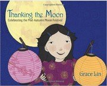
Thanking the Moon: Celebrating the Mid-Autumn Moon Festival
A family prepares and shares a moon-viewing picnic. Attention to food, objects and small tasks makes celebration a sequence of shared contributions; invite comparisons without assuming every family observes the festival alike.

A Big Mooncake for Little Star
· New York: Little, Brown and Company
A playful story about the phases of the moon, inspired by the Mid-Autumn Festival.

A Big Bed for Little Snow
Little Snow is tempted to bounce on a wonderfully full bed. The pictures connect his indoor mischief with snowfall, giving readers a visual secret beyond the straightforward account of a child testing a rule.
Hsu-Kung Liu (劉旭恭)
Taiwan
Hsu-Kung Liu creates picturebooks that connect imaginative situations with everyday feelings. His work includes The Orange Horse and Little Monk Writes Rain.

Little Monk Writes Rain
Hsu-Kung Liu (劉旭恭) (author-illustrator)
2026 · Eerdmans Books for Young Readers
A young monk repeatedly writes the character for rain, exploring attention, practice and self-expression.
The Orange Horse
English edition; publication year pending
A horse searches for belonging in a visually distinctive story.
Look at You! Look at the Mess You’ve Made!
English edition; publication year pending
A playful picturebook exploring a child’s mess-making and adults’ responses.
Trudy Ludwig
Trudy Ludwig writes picturebooks about the social dynamics of childhood. The Invisible Boy looks at quiet exclusion in the classroom and the effect of a classmate’s invitation.

The Invisible Boy
Trudy Ludwig · Patrice Barton
Brian is present in his classroom but often goes unnoticed. Colour gradually changes as another child includes him; look at how ordinary invitations and shared work make participation possible.
United States

Quiet Please, Owen McPhee!
Trudy Ludwig · Illustrated by Patrice Barton
A talkative boy discovers what he can learn when he makes time to listen.
Edition details
Kyle Lukoff
Kyle Lukoff writes children’s books about gender, family and belonging. When Aidan Became a Brother follows a transgender boy preparing to welcome a new sibling.
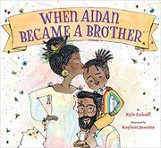
When Aidan Became a Brother
Kyle Lukoff · Kaylani Juanita
· New York: Lee & Low Books
United States
A transgender boy thinks about how to welcome a new sibling.

Just What to Do
Kyle Lukoff · Illustrated by Hala Tahboub
A child learns that people who are grieving may want different kinds of support.
Edition details
David McKee
David McKee wrote and illustrated picturebooks in which bright colour and dry humour carry difficult ideas. Elmer explores belonging, while Tusk Tusk and Two Monsters look at conflict and perspective.

Elmer
Andersen Press editions
A patchwork elephant tries to look like the rest of the herd and discovers what his absence changes. Look beyond the celebration of colour to the herd’s shared humour and Elmer’s wish to belong.
Publisher edition
Elmer and the Rainbow
Andersen Press editions
Elmer wants to help a rainbow that has lost its colours. The visual problem opens a playful discussion of giving and whether sharing must leave the giver diminished.
Publisher edition
Elmer and the Lost Teddy
Andersen Press editions
An elephant cannot sleep without his teddy, so Elmer helps search for it. The familiar attachment object makes a gentle route into talking about comfort, difference and practical care.
Publisher edition
Not Now, Bernard
Andersen Press editions
Bernard tries to attract his parents’ attention while a monster waits outside. The repeated adult response creates dark comedy; compare what adults notice with what children can see happening in the pictures.
Publisher edition
Two Monsters
Andersen Press editions
Two creatures interpret the same event differently and turn disagreement into a destructive exchange. Their changing landscape exposes the cost of the argument before they recognise the limits of their viewpoints.
Publisher edition
Tusk Tusk
Andersen Press editions
Black and white elephants become divided by hostility while others leave the conflict behind. The deliberately simple allegory raises questions about inherited prejudice and whether a new difference will become another excuse for division.
Publisher edition
The Conquerors
Andersen Press editions
A general’s campaign encounters a country that changes his soldiers in unexpected ways. Everyday habits challenge the fantasy of total control, making the quiet shifts as significant as the marching armies.
Publisher edition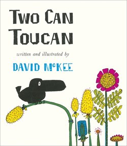
Two Can Toucan
Andersen Press editions
An unnamed bird looks for work and a place in the world. Wordplay and the jobs it attempts create a comic route towards a name and an identity.
Publisher edition
Robert Munsch
Canada
Robert Munsch is a Canadian picturebook storyteller known for energetic read-aloud language, humour and unexpected reversals. Love You Forever is one of my favourite picturebooks, especially for its portrayal of love and care across generations.
Official website · Bibliography
Love You Forever
Robert Munsch · Sheila McGraw
1986 · Firefly Books
One of my favourite picturebooks. The love between a mother and son comes full circle as they grow older.
The Paper Bag Princess
Robert Munsch · Michael Martchenko
1980 · Annick Press
Princess Elizabeth turns a familiar rescue narrative upside down and challenges expectations about princesses.
Official book pageStephanie’s Ponytail
Robert Munsch · Michael Martchenko
1996 · Annick Press
Stephanie tries distinctive hairstyles while her classmates copy her, inviting reflection on individuality and conformity.
Official book page
Jill Murphy
Jill Murphy wrote and illustrated stories about the comic frustrations of family life. In Peace at Last, familiar household noises keep returning just as Mr Bear is about to fall asleep.

Peace at Last
Jill Murphy
First published 1980 · Listed edition: ISBN 9781509862597 · Macmillan Children's Books
United Kingdom
Mr Bear moves from place to place looking for somewhere quiet enough to sleep. Repeated sounds make household noise funny and recognisable; use the book to compare which sounds different listeners find comfortable.
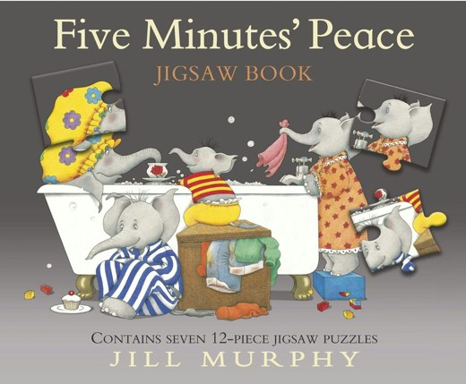
Five Minutes’ Peace
Jill Murphy
Mrs Large tries to find a few quiet minutes away from her lively family.
Edition details
Chris Naylor-Ballesteros
Chris Naylor-Ballesteros writes and illustrates stories in which small gestures carry much of the meaning. In The Suitcase, the arrival of a stranger prompts questions about trust and welcome.

The Suitcase
Chris Naylor-Ballesteros
2019 · Nosy Crow
United Kingdom
An exhausted newcomer arrives with a suitcase. The other animals’ decision to open it invites discussion about trust and welcome.
Edition details
Frank and Bert
Chris Naylor-Ballesteros
Two friends play hide-and-seek. The pictures let readers spot clues before the characters do.
Edition details
Tom Percival
Tom Percival uses visual metaphors to make feelings and social experiences easier to discuss. In Ruby’s Worry, worry takes on a visible shape, while The Invisible asks who gets noticed in a community.

Ruby’s Worry
Tom Percival
First published 2018 · Listed edition: ISBN 9781408892152
United Kingdom
Ruby notices a worry that follows her and grows as she tries to hide it. Its changing size makes an abstract feeling visible; the conversation at the end offers a way to begin sharing worries without promising that talking will instantly remove every anxiety.

The Invisible
Tom Percival
2021 · Simon & Schuster UK · ISBN 9781471191305
United Kingdom
After her family moves because they cannot afford to stay, Isabel feels overlooked and notices others in the same position. The illustrations use visibility to explore poverty and belonging.
Beatrix Potter
Beatrix Potter paired closely observed animals and landscapes with comic stories about manners, appetite and danger. The illustrations in The Tale of Peter Rabbit show how much is at stake for a small rabbit in a familiar garden.
The Tale of Peter Rabbit
Beatrix Potter
Peter enters Mr McGregor’s garden despite his mother’s warning and struggles to escape. Potter’s small-scale illustrations balance danger with close observation of animals, clothing and the garden itself.
United Kingdom


The Tale of Benjamin Bunny
Beatrix Potter
Benjamin goes back to Mr McGregor’s garden with his cousin Peter.
Edition details
Peter H. Reynolds
Peter H. Reynolds writes and illustrates stories about children finding confidence in their own ideas. In The Dot, a single mark becomes the starting point for creative experimentation.

The Dot
Peter H. Reynolds
Vashti’s reluctance to make art changes after a teacher takes her first mark seriously. The story opens questions about encouragement, experimentation and whose work gets displayed as art.
United States

Ish
Peter H. Reynolds
Ramon rediscovers the pleasure of drawing when he gives himself room to make pictures that look ‘ish’.
Edition details
Rose Robbins
Rose Robbins writes and illustrates picturebooks about autistic and other neurodivergent children’s everyday lives. Loud! and Me and My Sister show how siblings, teachers and classrooms can shape children’s experiences.

Loud!
Rose Robbins
2021 · Scallywag Press
United Kingdom
Abigail’s restlessness takes on a new meaning when her teacher notices her talent for making music. BookTrust identifies ADHD as implied.

Me and My Sister
Rose Robbins
First published 2019 · Listed edition: ISBN 9781912650231 · Scallywag Press Ltd
United Kingdom
A brother describes everyday life with his autistic sister, including disagreements, sensory differences and shared pleasures. It opens a conversation about sibling relationships while leaving room to ask how the sister might tell the same events.
Michael Rosen
Waterstones Children’s Laureate, 2007–09.
Winner of the 2026 Hans Christian Andersen Award for Writing.
Michael Rosen writes poetry and picturebooks shaped by the rhythms of speech. His work ranges from the repeated refrains of We’re Going on a Bear Hunt to the personal account of bereavement in Michael Rosen’s Sad Book.

Michael Rosen’s Sad Book
2004 · Walker Books
Words and pictures make space for grief that can persist and change over time.

We’re Going on a Bear Hunt
Michael Rosen · Helen Oxenbury
1989 · Walker Books
A family crosses grass, water and mud before its bear hunt becomes unexpectedly real. The repeated chant and changing sounds invite a spoken, signed or movement-based performance, with a quieter way to join in for readers who prefer it.

This Is Our House
Michael Rosen · Bob Graham
1996 · Walker Books
George claims a cardboard house and invents reasons to keep other children out. Changing who controls the entrance exposes the arbitrariness of his rules and gives readers a concrete way to discuss exclusion.

Little Rabbit Foo Foo
Michael Rosen · Arthur Robins
A mischievous rabbit repeatedly ignores a warning from a fairy. Rhythm, escalation and the final transformation make this a performance story; compare the different characters’ reactions to the punishment.

Chocolate Cake
Michael Rosen · Kevin Waldron
2017 · Puffin
A child’s night-time encounter with an irresistible cake becomes a lively spoken narrative. Sound effects, pauses and the temptation to keep taking another bite make it especially rewarding to hear aloud.

A Great Big Cuddle: Poems for the Very Young
Michael Rosen · Chris Riddell
2015 · Walker Books
Short poems explore sounds, bodies, everyday experiences and imaginary situations. Try a poem more than once, letting children choose the noises, gestures or pauses they want to contribute.

The Bear in the Cave
Michael Rosen · Adrian Reynolds
2007 · Bloomsbury
A bear leaves his quiet home to investigate a busy city. Repeated language and changing soundscapes invite comparison between excitement, noise and the comfort of returning somewhere familiar.

The Bus Is for Us!
Michael Rosen · Gill Tyler
2015 · Walker Books
Children imagine travelling in a succession of vehicles before celebrating a shared bus ride. Brief rhyming lines leave room for voices and actions, while the pictures extend the possibilities of each journey.

Tiny Little Fly
Michael Rosen · Kevin Waldron
2010 · Walker Books
A small fly disrupts much larger animals, who cannot quite catch it. The contrast in scale and recurring movements makes this an energetic read-aloud with plenty to notice in the characters’ expressions.

Red Ted and the Lost Things
Michael Rosen · Joel Stewart
2009 · Walker Books
A lost teddy meets other discarded belongings and tries to find a route home. The unfamiliar spaces and unlikely companions make a gentle adventure about being valued and finding help.

Dear Mother Goose
Michael Rosen · Nick Sharratt
2008 · Walker Books
Nursery-rhyme characters write to Mother Goose with problems that complicate their familiar stories. The letter format encourages readers to compare the advice with what they already know of each rhyme.

Bananas in My Ears
2011 · Walker Books
Rosen turns everyday mishaps, thoughts and conversations into short comic pieces. Read for the movement between ordinary speech and surprising sounds rather than expecting every poem to rhyme.
David M. Schwartz
David M. Schwartz writes books that make large numbers and unfamiliar scales easier to imagine. How Much Is a Million? and If You Hopped Like a Frog use playful comparisons to turn abstract ideas into questions children can explore.
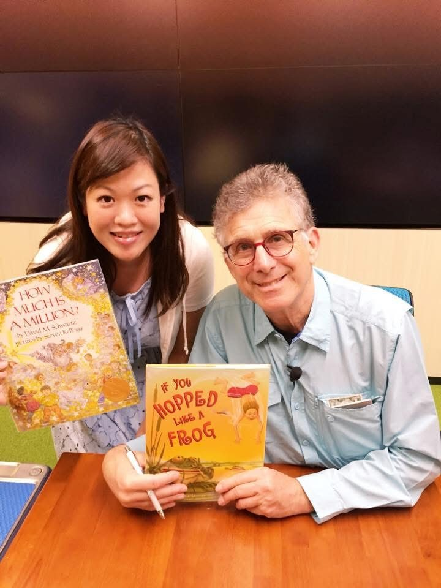

If You Hopped Like a Frog
David M. Schwartz · James Warhola
ISBN 9780590098571
Original publication: United States
Animal abilities are scaled up to human size to turn proportion into an imaginative question. Warhola’s exaggerated pictures invite estimates before readers compare the mathematical explanations; separate playful scaling from what a real human body could do.
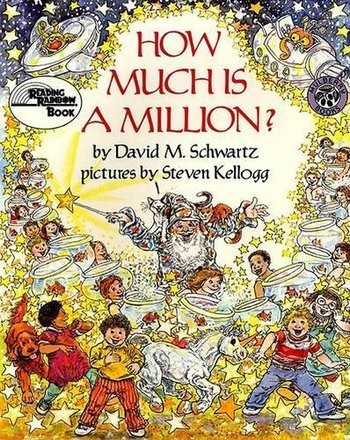
How Much Is a Million?
David M. Schwartz · Steven Kellogg
ISBN 9780688040499
Original publication: United States
A mathematical magician helps children imagine a quantity too large to count directly. Changes in scale and comparison make estimation visible; discuss which comparisons help a reader build a sense of magnitude.

If You Made a Million
David M. Schwartz · Steven Kellogg
ISBN 9780688070175
Original publication: United States
A playful journey connects earning, saving and large amounts of money. Use the pictures to compare quantities, while explaining that its US currency and financial examples belong to a particular context rather than a current UK financial guide.

Millions to Measure
David M. Schwartz · Steven Kellogg
ISBN 9780688129163
Original publication: United States
Marvelosissimo returns for an illustrated exploration of measurement and its changing units. Compare why different systems arose and try estimating a familiar object before choosing a suitable unit.
Maurice Sendak
Maurice Sendak wrote and illustrated picturebooks that give childhood fears and desires room to unfold. In Where the Wild Things Are, the pictures expand across the page as Max’s imagined world takes over.

Kenny’s Window
First published 1956
A dream sets Kenny a series of questions that lead into imaginative encounters. The episodic form leaves room to explore loneliness, friendship and questions that resist literal answers.
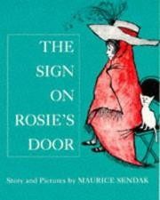
The Sign on Rosie’s Door
First published 1960
Rosie turns an ordinary day into a performance for the children around her. Watch how props, gesture and audience response blur the boundary between play and theatrical storytelling.

Where the Wild Things Are
First published 1963
After an argument at home, Max travels into a world where his anger and imagination take expansive form. Changes in the size of the illustrations help tell the emotional journey before his return to a waiting supper.

Higglety Pigglety Pop! or There Must Be More to Life
First published 1967
Jennie the dog leaves comfort behind in search of experience and eventually a part in a play. The odd encounters and theatrical conclusion invite a reading about desire that is more complicated than finding a better home.

In the Night Kitchen
First published 1970
Mickey’s dream carries him through a kitchen where baking becomes a surreal adventure. Panels, repeated sounds and changing scale invite readers to follow the movement between a child’s body and an enormous adult world.
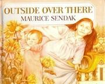
Outside Over There
First published 1981
Ida must recover her baby sister after goblins take her away. The unsettling fantasy attends to anger, care and responsibility; preview its imagery and leave space for different responses to the sibling relationship.

We Are All in the Dumps with Jack and Guy
First published 1993
Nursery-rhyme fragments become a visual narrative about children facing poverty and danger. Dense, disturbing imagery demands contextual discussion rather than an assumption that a rhyming text is automatically light reading.

Bumble-Ardy
First published 2011
A pig plans the birthday party he has never had, and the celebration grows out of control. The exuberance sits beside fear of rejection and the desire to be forgiven, making the ending worth reading slowly.
Craig Smith
Craig Smith is a New Zealand songwriter and author whose collaborations with Katz Cowley bring cumulative rhyme into shared reading. In The Wonky Donkey, each new description adds to a refrain that readers can say or sing.


The Wonky Donkey
Craig Smith · Katz Cowley
ISBN 9781407195575
Original publication: New Zealand
A donkey acquires an increasingly elaborate string of rhyming descriptions. The cumulative pattern encourages performance and memory; read critically with children about when bodily difference becomes the object of a joke, and respect a reader who does not find that framing funny.
Story / creator connection: Aotearoa New Zealand

The Dinky Donkey
Craig Smith · Katz Cowley
ISBN 9781338600834
Original publication: New Zealand
The next generation of the donkey family brings another accumulating rhyme and a lively set of sounds. Compare how each new description changes the rhythm, and let listeners choose spoken, signed or quieter participation.
Story / creator connection: Aotearoa New Zealand

The Grinny Granny Donkey
Craig Smith · Katz Cowley
ISBN 9781338692273
Original publication: New Zealand
A grandmother joins the donkey family in a sequence of increasingly crowded rhymes. The musical language offers a performance exercise, with pictures that can be read alongside the rapidly expanding verbal description.
Story / creator connection: Aotearoa New Zealand
Catarina Sobral
Catarina Sobral is a Portuguese author and illustrator whose picturebooks use bold shapes and deliberate colour choices. In O Meu Avô, contrasting routines make different ways of experiencing time visible.

O Meu Avô
Catarina Sobral
Portuguese · Lisboa · Orfeu Negro · First published 2014 · ISBN 9789898327321 (publisher’s listed edition)
Portugal
Language of this edition: Portuguese
A retired watchmaker and a busy doctor live by different rhythms. Look for references to painting and film as their routines intersect.
Edition and cover details
Fantasmas, bananas e avestruzes
Catarina Sobral
Portuguese · Assembleia da República · 2023 · ISBN 9789725568293
Portugal
Language of this edition: Portuguese
Playful pictured examples give readers a way into the unseen rules that shape daily life. Compare the ghosts with the everyday objects and ask why they share a page.
Alexandra Strick
Alexandra Strick writes picturebooks about participation and belonging. Her collaborations with Steve Antony in You Can! and We Can! place children’s ambitions and choices at the centre of the story.

You Can!
Alexandra Strick · Steve Antony
2021 · Otter-Barry Books
Follow the same children across life stages and look for the visual stories that run alongside the text.

We Can!: Make a Difference
Alexandra Strick · Steve Antony
2024 · Otter-Barry Books · ISBN 9781915659309
A child-led festival makes room for accessible play and collective action.
Shaun Tan
Shaun Tan uses unfamiliar settings and shifts in scale to explore migration, isolation and belonging. His wordless book The Arrival lets readers piece together a new world alongside its protagonist.

The Arrival
A newcomer navigates an unfamiliar city in a wordless sequence of drawings. Invented creatures and unreadable signs put readers alongside his uncertainty; follow recurring objects and gestures to build an interpretation.

The Red Tree
Trace how recurring visual details give shape to feelings the narrator struggles to name.

The Lost Thing
A boy notices a strange creature that everyone else seems to overlook. Industrial settings and official instructions create a question about whether fitting in is the same as finding a place to belong.

Cicada
An insect office worker endures exclusion and exploitation in a human workplace. The restricted narration and abrupt visual shift at the end make this a challenging book about labour, power and escape.

Eric
A family hosts an exchange student whose interests seem unexpectedly small and particular. The quiet visual surprises invite readers to consider what hospitality looks like from a guest’s perspective.

Rules of Summer
Two boys move through a summer governed by strange, often unspoken rules. The relationship between the brief captions and expansive images leaves readers to negotiate power, loyalty and what may have happened between scenes.
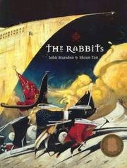
The Rabbits
John Marsden (author) · Shaun Tan (illustrator)
Introduced rabbits transform a landscape inhabited by other creatures. Its allegory opens discussion of colonisation and environmental change; contextualise the book as a work by non-Indigenous creators rather than an Indigenous account of invasion.

Memorial
Gary Crew (author) · Shaun Tan (illustrator)
A family’s memories gather around a tree threatened by road development. The layered images connect personal recollection, war remembrance and public decisions about what a community preserves.
Martin Waddell
Martin Waddell writes picturebooks in which repetition gives children language for fear and reassurance. In Owl Babies and Can’t You Sleep, Little Bear?, repeated exchanges make small changes in feeling easy to hear.

Owl Babies
Martin Waddell · Patrick Benson
First published 1992 · Listed edition: ISBN 9780744531671 · Walker
United Kingdom
Three young owls wait together for their mother to return. Their different responses to the same separation invite conversation about worry, reassurance and the comfort of being with someone else.
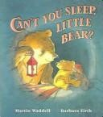
Can’t You Sleep, Little Bear?
Martin Waddell · Barbara Firth
ISBN 9780763622053
United Kingdom
Little Bear’s fear of the dark persists even as Big Bear brings larger lamps. The patient exchange and the final view of the night sky offer reassurance while taking the smaller bear’s worry seriously.
David Wiesner
David Wiesner writes and illustrates picturebooks that ask readers to follow visual clues. In wordless stories such as Flotsam, framing and page turns do much of the storytelling.

Tuesday
Frogs travel through a sleeping town on floating lily pads. Nearly wordless sequences combine a precise sense of time with an impossible event; follow the evidence left for the bewildered humans.

Flotsam
A child finds an underwater camera washed onto a beach and develops its extraordinary photographs. Repeated images invite close looking at scale, time and the chain of people connected through the camera.

Sector 7
A visit to a tall building leads a child into the workshop where clouds are made. The visual narrative connects imaginative drawing with questions about routine, control and who gets to change the pattern.

Free Fall
A sleeping child’s surroundings transform into a succession of dream landscapes. Repeated forms link one scene to the next and invite readers to find how ordinary objects become unfamiliar.

The Three Pigs
Characters step outside their printed story and move between different narrative worlds.
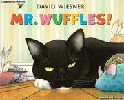
Mr. Wuffles!
A cat’s apparently uninteresting toy contains tiny visitors with a problem to solve. Invented written languages and panel sequences ask readers to infer communication through pictures and cooperation.

Art & Max
An attempt to paint a portrait changes the characters and the materials of their world. Colour, line and the physical properties of paint become part of the joke about what making art might mean.

Hurricane
Two brothers wait out a storm and discover new possibilities in its aftermath. The movement between domestic safety and outdoor imagination makes the fallen tree more than a damaged object.
Shinsuke Yoshitake
Japan
Shinsuke Yoshitake turns everyday objects and questions into playful investigations of identity and possibility. His small drawings and visual variations encourage readers to imagine alternative explanations.

It Might Be an Apple
Shinsuke Yoshitake (author-illustrator)
2015 · Thames & Hudson
A child considers what an apple might be, moving from an ordinary object to increasingly inventive possibilities.
Can I Build Another Me?
2016 · Thames & Hudson
A child imagines making a robot double and begins asking what makes a person unique.
Still Stuck
2017 · English edition
A child gets trapped in his clothes while undressing and turns a small frustration into imaginative comedy.
Selected covers from publishers. Additional edition covers supplied by Open Library where available.
↑